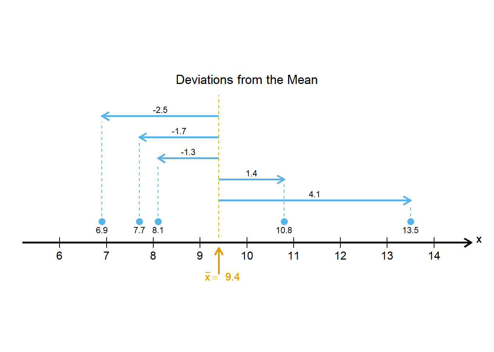
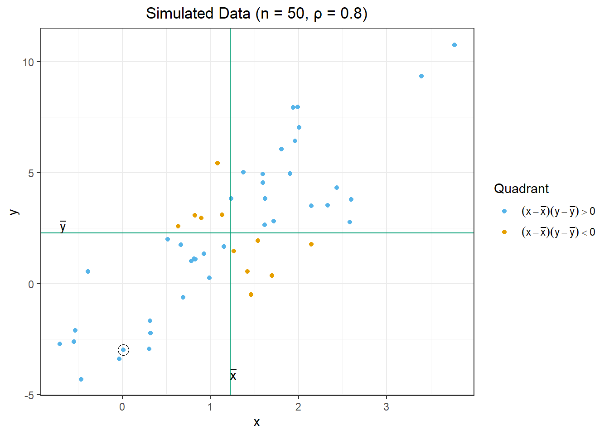

# Set random seed
set.seed(2412)
# Specify means and standard deviation
n <- 5 # number of points
mu <- 10 # mean
sigma <- 3 # standard deviation
# Simulate normal data
sim_data <- data.frame(x = round(rnorm(n, mu, sigma), 1)) |>
arrange(x)Covariance and Correlation
Chapter 2: Lesson 1
Learning Outcomes
Compute the key statistics used to describe the linear relationship between two variables
- Compute the sample mean
- Compute the sample variance
- Compute the sample standard deviation
- Compute the sample covariance
- Compute the sample correlation coefficient
- Explain sample covariance using a scatter plot
Interpret the key statistics used to describe sample data
- Interpret the sample mean
- Interpret the sample variance
- Interpret the sample standard deviation
- Interpret the sample covariance
- Interpret the sample correlation coefficient
Preparation
- Read Sections 2.1-2.2.2 and 2.2.4
Learning Journal Exchange (10 min)
- Review another student’s journal
- What would you add to your learning journal after reading your partner’s?
- What would you recommend your partner add to their learning journal?
- Sign the Learning Journal review sheet for your peer
Class Activity: Variance and Standard Deviation (10 min)
We will explore the variance and standard deviation in this section.
The following code simulates observations of a random variable. We will use these data to explore the variance and standard deviation.
The data simulated by this process are:
The variance and standard deviation are individual numbers that summarize how far the data are from the mean. We first compute the deviations from the mean, \(x - \bar x\). This is the directed distance from the mean to each data point.

We can summarize this information in a table:
Table 1: Deviations from the mean
| $$x_t$$ | $$x_t-\bar x$$ | ||||
|---|---|---|---|---|---|
| 6.9 | -2.5 | ||||
| 7.7 | -1.7 | ||||
| 8.1 | -1.3 | ||||
| 10.8 | 1.4 | ||||
| 13.5 | 4.1 |
Class Activity: Covariance and Correlation (15 min)
\[ r \cdot s_x \cdot s_y = \frac{\sum\limits_{t=1}^n (x - \bar x)(y - \bar y)}{\sqrt{\sum\limits_{t=1}^n (x - \bar x)^2} \sqrt{\sum\limits_{t=1}^n (y - \bar y)^2}} \cdot \sqrt{ \frac{\sum\limits_{t=1}^n (x - \bar x)^2}{n-1} } \cdot \sqrt{ \frac{\sum\limits_{t=1}^n (y - \bar y)^2}{n-1} } = ? \]
Team Activity: Computational Practice (15 min)
Table 3: Computational Practice
The table below contains values of two time series \(\{x_t\}\) and \(\{y_t\}\) observed at times \(t = 1, 2, \ldots, 6\). We will use these values to practice finding the means, standard deviations, correlation coefficient, and covariance without using built-in R functions.
| $$t$$ | $$x_t$$ | $$y_t$$ | $$x_t-\bar x$$ | $$(x_t - \bar x)^2$$ | $$y_t-\bar y$$ | $$(y_t-\bar y)^2$$ | $$(x_t - \bar x)(y_t-\bar y)$$ |
|---|---|---|---|---|---|---|---|
| 1 | -2.1 | 2.8 | -1.9 | 3.61 | 1 | 1 | -1.9 |
| 2 | -0.2 | 2.2 | |||||
| 3 | 0.8 | 0.9 | |||||
| 4 | 0.4 | 2 | |||||
| 5 | 2.3 | -1 | |||||
| 6 | -2.4 | 3.9 | |||||
| sum | -1.2 | 10.8 | |||||
| $$~$$ |
Use the table above to determine these values:
\(\bar x =\)
\(\bar y =\)
\(s_x =\)
\(s_y =\)
\(r =\)
\(\\cov(x,y) =\)
Here is a scatterplot of the data.

Summary
Computations in R (5 min)
Use these commands to load the data from the previous activity into R.
x <- c( -2.1, -0.2, 0.8, 0.4, 2.3, -2.4 )y <- c( 2.8, 2.2, 0.9, 2, -1, 3.9 )We can use R to compute the mean, variance, standard deviation, correlation coefficient, and covariance.
Mean, \(\bar x\)
mean(x)[1] -0.2Variance, \(s_x^2\)
var(x)[1] 3.212Standard Deviation, \(s_x\)
sd(x)[1] 1.792205Correlation Coefficient, \(r\)
cor(x, y)[1] -0.9449384Covariance, \(\\cov(x,y)\)
cov(x, y)[1] -2.86Homework Preview (5 min)
- Review upcoming homework assignment
- Clarify questions